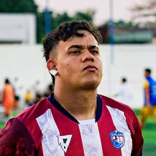

@el_bermu09
IbaguéSu contenido es de humor, calle y situaciones cotidianas. También es emprendedor y tiene una comunidad de creadores en la región.
- Seguidores
- 207,6 mil
- Interacción
- 3,6%
De las nueve cuentas que propuso Management CM, esta propuesta conserva cuatro, de perfil futbolero y de humor, una por cada plaza: Ibagué, Barranquilla, Medellín y Cali. Las otras cinco se descartaron por su costo por mil views, su bajo engagement o la ubicación de su audiencia, como se explica más abajo. Ninguna está aprobada todavía: la decisión de cuáles entran al plan de influencers es de YaJuego.
Buscamos creadores que le hablen al hincha, que cubran varias ciudades y que mezclen tamaños de cuenta, y que además se pueda comprobar quién los sigue.
Tres de las cuatro cuentas tienen el fútbol en su contenido o en su comunidad: un equipo de fútbol de creadores o una hinchada propia, la de Atlético Nacional y la del Deportivo Cali. La cuarta aporta humor y calle. Es un contexto natural para integrar YaJuego en partidos, retos y experiencias futboleras.
Una cuenta por plaza: Ibagué, Barranquilla, Medellín y Cali, donde 41% de la audiencia de @uncalenoporahi se concentra.
Una cuenta pasa de 200 mil seguidores, otra está en 80,2 mil y dos tienen 16,1 mil o menos. La más grande interactúa 3,6% y la de 80,2 mil, 5,0%; entre las pequeñas, @soypipefutbol llega a 5,0%. Las cuentas grandes aportan alcance y las pequeñas, una comunidad cercana.
De tres de las cuatro cuentas hay datos de audiencia: credibilidad, seguidores reales, país y edad. Con ellos más abajo se ve qué tan sólido es cada perfil, y es parte de lo que se usó para descartar a otros.
De mayor a menor audiencia. Cada creador abre su ficha con rendimiento, audiencia e inversión estimada.
Su contenido es de humor, calle y situaciones cotidianas. También es emprendedor y tiene una comunidad de creadores en la región.

Creador de humor y entretenimiento que, además, hace parte de un equipo de fútbol de creadores. Su perfil permite integrar YAJUEGO desde el humor y las dinámicas futboleras, con potencial para conectar con una audiencia amplia.

Creador enfocado en el Deportivo Cali y el fútbol colombiano. Su audiencia tiene una alta concentración en Cali, lo que lo convierte en una opción estratégica para conectar con los hinchas de la región.

Creador y periodista enfocado en Atlético Nacional, con una comunidad de hinchas que conecta desde la pasión y la identidad verdolaga.
Seguidores e interacción, lado a lado. Una cuenta pequeña con buena interacción puede rendir más por peso invertido que una grande con interacción baja.
| Creador | Plaza | Seguidores | Interacción |
|---|---|---|---|
| @el_bermu09 | Ibagué | 207.602 | 3,6% |
| @elgonchi__ | Barranquilla | 80.209 | 5,0% |
| @uncalenoporahi | Cali (audiencia) | 16.123 | 3,8% |
| @soypipefutbol | Medellín | 10.292 | 5,0% |
Tamaño no es calidad. Estas son las señales de audiencia que Blindy calcula para cada cuenta. De una de ellas no hay datos.
| Creador | Credibilidad | Seguidores reales | Audiencia en Colombia | 13 a 17 años |
|---|---|---|---|---|
| @el_bermu09 | Sin dato | Sin dato | Sin dato | Sin dato |
| @elgonchi__ | 70% | 55,6% | 90,7% | 6,2% |
| @uncalenoporahi | 75% | 56,7% | 78,9% | 2,6% |
| @soypipefutbol | 73% | Sin dato | 73,9% | 9,1% |
De @el_bermu09 Blindy no tiene datos de audiencia, así que no se puede verificar ninguna de estas señales. Conviene pedírselos a Management CM.
De las nueve cuentas de Management CM quedaron fuera cinco. Los motivos son el costo por mil views, el bajo engagement y, en dos casos, una audiencia que está en otros países.
| Creador | Seguidores | Interacción | Costo por mil views | Por qué se descartó |
|---|---|---|---|---|
| @soyeltruji | 14.861 | 0,1% | $57.086 | Interacción de 0,1% y solo 25,6% de seguidores reales. Sus mayores audiencias están en India, Italia y Estados Unidos, no en Colombia. |
| @caspian.col | 10.774 | 4,8% | $230.895 | Costo por mil views alto y solo 25,1% de su audiencia en Colombia: el resto está en Argentina, España y Chile, entre otros. |
| @jeisonmattaa | 265.533 | 3,7% | $145.998 | Es el talento más caro ($6.134.831) para 42.020 views estimadas, y solo incluye el reel collab. |
| @xpgabo_ | 31.706 | 6,7% | $844.320 | Costo por mil views muy alto: $2.921.348 para 3.460 views estimadas. |
| @juango____ | 4.055 | 5,1% | $1.449.082 | Costo por mil views muy alto: $1.825.843 para 1.260 views estimadas. |
@soypipefutbol se conserva aunque su costo por mil views es alto ($490.159): sus views estimadas en el PDF (4.470) están muy por debajo del promedio de sus reels en Blindy (312.745), así que ese costo sobrestima lo que cuesta cada mil views reales.
Valor bruto por talento, alcance y views esperadas, y la reserva que completa $20 millones. No se indica la moneda de los valores.
| Creador | Acciones | Valor bruto | Alcance est. | Views est. | Costo por mil views |
|---|---|---|---|---|---|
| @el_bermu09 | Reel collab + derecho de pauta por un mes | $3.505.618 | 4.555 | 318.980 | $10.990 |
| @elgonchi__ | Reel collab + derecho de pauta por un mes | $4.089.888 | 32.577 | 231.750 | $17.648 |
| @uncalenoporahi | Reel collab + derecho de pauta por un mes | $4.235.955 | 22.601 | 39.380 | $107.566 |
| @soypipefutbol | Reel collab + derecho de pauta por un mes | $2.191.011 | 4.555 | 4.470 | $490.159 |
| Subtotal talentos | $14.022.472 | 64.288 | 594.580 | $23.584 | |
| @danigoals__ | Reserva: cotización en revisión | $5.977.528 | Por definir | Por definir | Por definir |
| Total de la propuesta | $20.000.000 |
En una cuenta, @uncalenoporahi, las views estimadas coinciden con el promedio de sus reels en Blindy. En tres no: @el_bermu09 (318.980 estimadas contra 1.033.239), @elgonchi__ (231.750 estimadas contra 49.581) y @soypipefutbol (4.470 contra 312.745). Antes de comparar costos conviene saber de dónde salió cada estimación. Además, el PDF repite el mismo alcance (4.555) en @soypipefutbol y @el_bermu09.